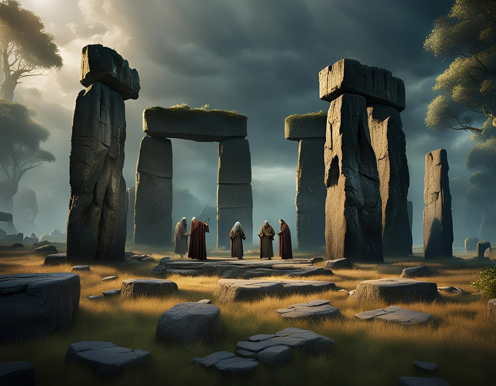

Druids within the Circle of the Fey believe that the Feywild is the essence of the material plane. Instead of taking their power from their belief in nature, druids who follow this path gain abilities and spells bestowed on them by the energy of the Feywild itself. This circle allows druids to release the energy of the Feywild in the form of trickery, natural prowess, and the unique power of the Feywild. As the Feywild itself is divided, the Circle of the Fey are divided into two sections: Seelie and Unseelie. The most powerful Seelie can change the reality of the material plane to better suit their Fey power, while Unseelie elders can wither their enemies with a wave of their hand. When you take this druid circle, you must choose one or the other court to be your focus.
Bonus Cantrip
When you choose this circle at 2nd level, you gain one additional cantrip depending on which fey court you choose: one bard cantrip if you chose Seelie or one warlock cantrip if you chose Unseelie.
Circle Spells
Your mystical connection to the Feywild infuses you with the ability to cast certain Spells. At 3rd, 5th, 7th, and 9th level you gain access to circle Spells connected to your Fey power.
Consult the spell list associated the Fey court you chose.
Once you gain access to a circle spell, you always have it prepared, and it doesn’t count against the number of Spells you can prepare each day. If you gain access to a spell that doesn’t appear on the druid spell list, the spell is nonetheless a druid spell for you.
Seelie